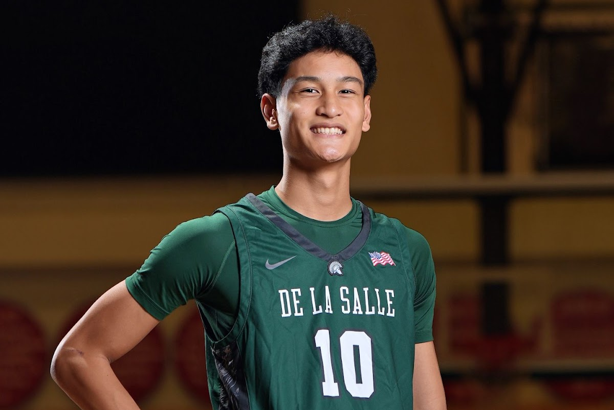
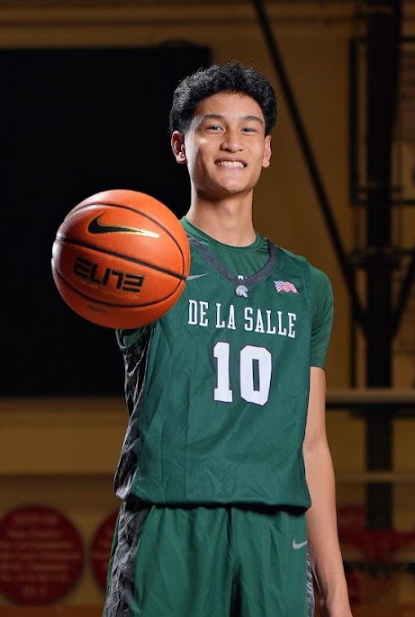
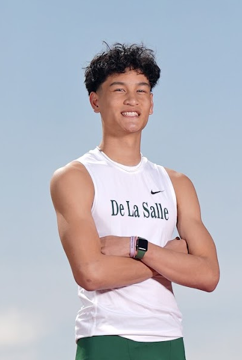

B.S. Computer Science
Data Science concentration and a minor in Entrepreneurial Leadership through the Hogan program at Gonzaga University.
AI-Native Marketing Intern at BrandCapsule. Studying Computer Science and Entrepreneurial Leadership at Gonzaga, where clean systems, deliberate growth, and competitive basketball still shape how I work.

Schools and teams that shaped the work — looping the same way the season never really stops.


AI-Native Marketing Intern @ BrandCapsule · Computer Science & Entrepreneurial Leadership @ Gonzaga University.
Data Science concentration and a minor in Entrepreneurial Leadership through the Hogan program at Gonzaga University.
Interning at BrandCapsule and contributing through New Venture Lab consulting — where AI, storytelling, and product value meet.
Competing with Gonzaga Club Basketball after a De La Salle varsity career in basketball and hurdles.
I stopped dotting my i’s.
Not because I lack attention to detail, and not because I’m careless. I stopped because I realized that perfection is not singular. For me, writing without dotted i’s is cleaner, more efficient, and intentional.
At first, it was difficult. Years of habit pulled me back to convention. I would catch myself dotting an i and deliberately erase it. Over time, what was once automatic became a conscious decision. Eventually, the new standard became my default.
That process reflects how I approach both computer science and basketball.
In computer science, efficiency matters. Clean code matters. Intentional design matters. I constantly evaluate systems, whether it is an algorithm, a data structure, or a workflow, and ask myself if this is the cleanest and most effective way to solve the problem. If it is not, I refine it. Optimization is not accidental. It is deliberate. Like removing the dot above an i, small adjustments compound into meaningful improvements.
Basketball reinforces the same principle. The best players are not simply talented. They are disciplined. They study their mechanics, adjust their footwork, refine their shot selection, and repeat those refinements until they become instinct. I approach growth the same way. I identify inefficiencies, correct them intentionally, and practice until the better method becomes second nature.
What may look unconventional to others is rarely accidental for me. It is the result of deliberate iteration.
I do not change things to be different. I change them to be better, and I am willing to condition myself until better becomes standard.
A few frames from the court, the classroom, and community life.



What fills the space between practices, projects, and deadlines.
Gonzaga Club Basketball after a De La Salle varsity career — film, footwork, and sharing the game whenever I can.
Hogan Entrepreneurial Leadership, pitch practice, and startup collaboration through Gonzaga’s New Venture Lab.
Building cleaner systems, exploring algorithms, and refining workflows until better becomes the default.
Cruise traditions, garden mazes, and new cities — adventures that keep curiosity and connection alive.